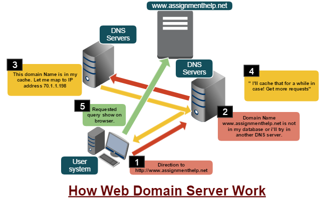
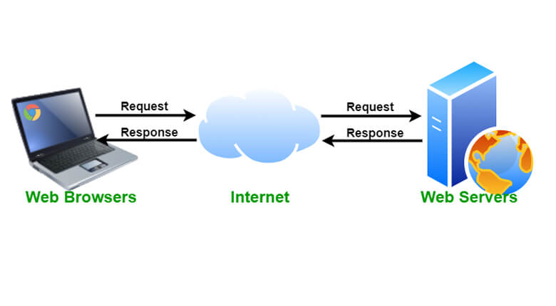
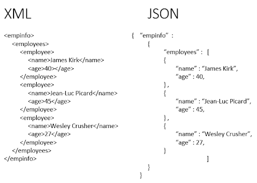

Chapter 2
- Operating System
- World Wide Web
- Internet How does the internet work
- What is Domain Name. DNS and how it works
- What is IP , port
- Web Server, Hosting
- HTTP, HTTPS
- Web Socket
- Git, GitHub
Operating System
An Operating System (OS) is an interface between a computer user and computer hardware. An operating system is a software which performs all the basic tasks like file management, memory management, process management, handling input and output, and controlling peripheral devices such as disk drives and printers.
Top Operating Systems In Market
- MS-Windows
- Mac OS
- Solaris
- Free BSD
- Chrome OS
- CentOS
- Debian
- Ubuntu
- kali linux
World Wide Web
IP address
- Every computer on the Internet, be it a web server, home computer or any other network device has a unique IP address allotted to it. This IP address is used to establish connections between the server and the client in order to initiate the transfer of data.
- IP address example - 173.245.61.120
DNS (Domain Name System)

DNS (Domain Name System)
- A “Domain Name System” or “Domain Name Service” is a computer network protocol whose job is to map a user friendly domain name such as “google.com” to its corresponding IP address like “173.245.61.120″.
- DNS servers that contain the complete database of domain names and their corresponding IP addresses.
How DNS Server Works ?
- Whenever you type a URL such as “http://www.google.com” on your browser’s address bar, your computer will send a request to the local name server to resolve the domain name into its corresponding IP address. This request is often referred to as a DNS query. The local name server will receive the query to find out whether it contains the matching name and IP address in its database. If found, the corresponding IP address (response) is returned. If not, the query is automatically passed on to another server that is in the next higher level of DNS hierarchy.
Port
- Port numbers are sometimes seen in web or other uniform resource locators (URLs). By default, HTTP uses port 80 and HTTPS uses port 443, but a URL like http://www.example.com:8080/path/ specifies that the web browser connects instead to port 8080 of the HTTP server.
Web Server
- Web server is computer software and underlying hardware that accepts requests via HTTP, the network protocol created to distribute web pages.
- A web server is a computer that runs websites. It's a computer program that distributes web pages as they are requisitioned. The basic objective of the web server is to store, process and deliver web pages to the users.
- Apache server is the most common web server available in the market.
- Apache, NgInx, Apache Tomcat, Lighttpd, glassfish e.t.c
Web Server
What is HTTP ?
Protocol HTTPS
- HTTPS (Hypertext Transfer Protocol Secure) is a secure version of the HTTP protocol that uses the SSL/TLS protocol for encryption and authentication.
- HTTPS is specified by RFC 2818 (May 2000) and uses port 443
HTTP/1.1 , HTTP/2, HTTP/3
- HTTP/1.1 - Developed by Timothy Berners-Lee in 1989 as a communication standard for the World Wide Web, HTTP is a top-level application protocol that exchanges information between a client computer and a local or remote web server.
- HTTP/2 began as the SPDY protocol, developed primarily at Google with the intention of reducing web page load latency by using techniques such as compression, multiplexing, and prioritization. The HTTP/2 specification was published as RFC 7540 on May 14, 2015
- HTTP/3 uses QUIC, a transport layer network protocol which uses user space congestion control over the User Datagram Protocol (UDP). Google Chrome supports HTTP/3 by default since April 2020
HTTP - Methods
- GET - The GET method is used to retrieve information from the given server using a given URI. Requests using GET should only retrieve data and should have no other effect on the data.
- POST - The POST request is used to send data to the server, for example, customer information, file upload, etc. using HTML forms.
- PUT - Replaces all current representations of the target resource with the uploaded content.
- DELETE - Removes all current representations of the target resource given by a URI
GET Method Example
HTTP/1.1 200 OK
Date: Mon, 27 Jul 2009 12:28:53 GMT
Server: Apache/2.2.14 (Win32)
Last-Modified:Wed,22 Jul 2009 19:15:56
ETag: "34aa387-d-1568eb00"
Vary: Authorization,Accept
Accept-Ranges: bytes
Content-Length: 88
Content-Type: text/html
Connection: Closed
HTTP Status Codes
- 1×× Informational
- 2×× Success
- 3×× Redirection
- 4×× Client Error
- 5×× Server Error
JSON and XML
- JSON is a language-independent data format. It was derived from JavaScript, but many modern programming languages include code to generate and parse JSON-format data. The official Internet media type for JSON is application/json. JSON filenames use the extension .json
- The Extensible Markup Language (XML) is a simple text-based format for representing structured information: documents, data, configuration, books, transactions, invoices, and much more . media types application/xml and text/xml
JSON and XML
WebSocket

WebSocket
- WebSocket is a communication protocol over a TCP connection designed to exchange messages between a browser and a web server in real time.
- example: websocket.org/echo.html
Terminal CMD(Command Prompt)

Terminal commands
- pwd - command displays the path of your current working directory:
- cd - (change directory). change the current working directory
- ls displays a list of the names of all files in the current working directory
- cat - command prints the contents of one or more files
- cp, mv - copy and move files
- mkdir, rmdir - crate , delete and folders
- touch, rm - crate, delete files
Version Control Systems
- Git
- Microsoft Team Foundation Server
- Apache Subversion
- AWS CodeCommit
- Mercurial
- CVS
Git Commands
- git config --global user.name "Fabio"
- git init
- git add filename_here , git add .
- git status
- git commit -m "your commit message here"
- git pull, git push
- git add remote https://github.com/repo_name
GitHub is a provider of Internet hosting for software development and version control using Git
- GitHub
- GitLab
- BitBucket
Summary
- Operating System
- World Wide Web
- DNS, How DNS Server Works
- Port
- Web Server
- JSON and XML
- WebSocket
- Terminal , Terminal commands
- Version Control Systems Git, Git Commands
- Provider of Internet hosting GitHub, GitLab, BitBucket